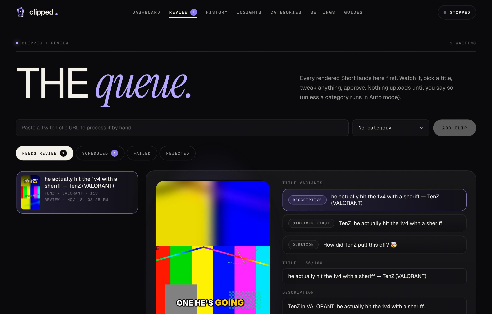

clipped
Clips to shorts, on autopilot.
clipped finds the hottest clips in any Twitch category, burns in word-by-word captions, reframes them to 9:16, writes the title, credits the streamer and uploads to your YouTube channel. Approve each one, or let it run on a schedule.
No server of ours. Your keys stay in your OS keychain. Quick start
Every word lands on time.
Clip in. Short out.
Find the heat
Top clips from any Twitch category, ranked by views per hour, ideal length and how loud chat got.
Never twice
Every clip is remembered. Same moment clipped by someone else? Too similar to last week's upload? Skipped.
Hear every word
Local speech-to-text with word timestamps (faster-whisper). Runs offline once the model is downloaded.
Captions that pop
Big bold captions, the current word lights up, safe-area aware. Your font, colours and position.
Vertical with a hook
Blurred fill, facecam-over-gameplay split or crop. Dead air trimmed, the best moment flashes forward, hook text for two seconds.
Titled, credited, posted
2-3 title variants, a description that always credits the streamer and links the clip, a thumbnail, then YouTube.
You approve, or it flies.
Manual review.
Every render waits in a queue with a 9:16 preview. Pick a title, edit anything, approve.
- Editable title, description, hashtags, hook and thumbnail
- Approve, reject or re-render
- Nothing uploads until you say so
Auto pilot.
Picks, renders and uploads on your schedule. Every 30 minutes, 2h, 6h, a day, or your own interval.
- Daily cap, minimum gap, quiet hours, pause until
- Approved streamers only, on by default
- Stops before YouTube's quota runs out
Gets better every upload.


Your keys. Your machine.
- Account
- None
- Keys
- Your OS keychain, never logged
- Dashboard
- localhost only
- Talks to
- Twitch, Google, your AI provider
- Telemetry
- None
- Price
- Free · MIT
Unzip. Run.
localhost:8000. Builds aren't code-signed yet: on Windows choose More info → Run anyway, on macOS right-click → Open the first time.Docker
git clone https://github.com/ritviksajeev/clipped
cd clipped && docker compose up -d --buildFrom source
pip install -e .
cd frontend && npm ci && npm run build
clipped # opens the app windowEvery version is on the releases page.
Three steps, all free.
Twitch keys
Register a free Twitch developer app and paste the Client ID and Secret. About 3 minutes.
Twitch guide 02Connect YouTube
Create your own Google Cloud project and OAuth client, then click Connect. About 10 minutes.
YouTube guide 03Pick games, press start
Add categories, press the big button, approve your first Shorts in the review queue.
Quick startIs it really free?
Yes. clipped is MIT-licensed, the Twitch and YouTube APIs are free, and transcription runs on your computer. AI-written titles are optional and billed by your own Anthropic or OpenAI account; the free templates work without them.
Why are my first uploads private?
YouTube locks uploads from API projects that haven't passed its free compliance audit to private. clipped detects this and links the audit form; until then you can flip videos to Public in YouTube Studio. Details
How many Shorts a day?
A new Google Cloud project gets 10,000 API units a day, about six uploads. clipped tracks the quota, stops before it runs out and resumes after the daily reset.
Do you see my keys or videos?
No. There is no clipped server. Keys live in your operating system's keychain and only ever go to the service they belong to.
Is reposting clips allowed?
That depends on the streamer and the platforms' rules, and it's your call. clipped always credits the streamer, defaults to manual approval, supports an approved-streamers list, and lets you add commentary and intros so your Shorts are more than reposts. Safety guide